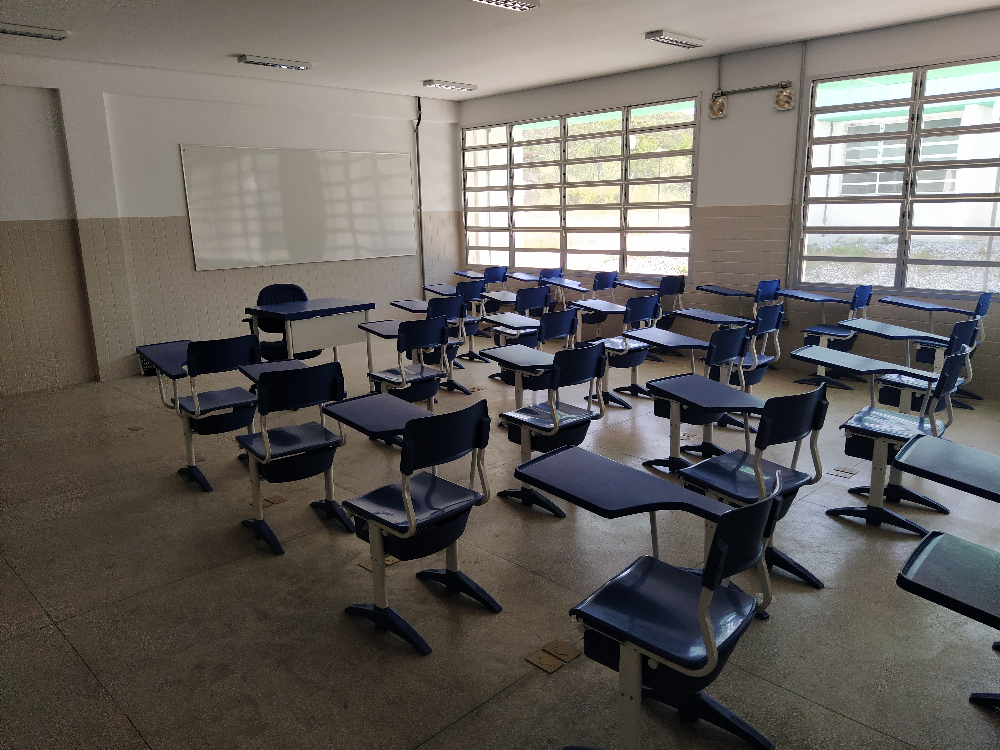
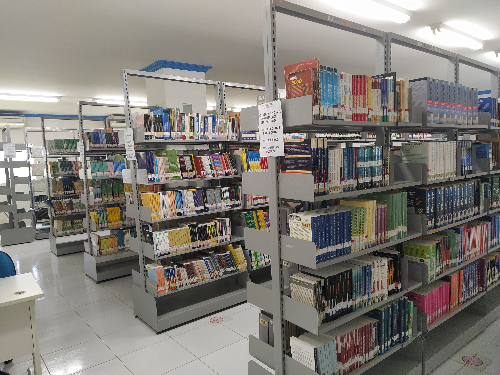
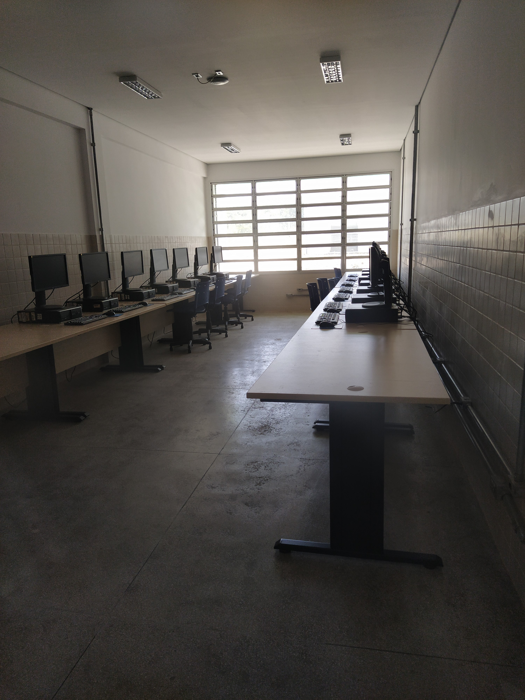

Salas de aula
Ambientes para aulas, apresentações, seminários, avaliações, orientação e discussões das disciplinas.
Conheça os espaços de aprendizagem, laboratórios, biblioteca, áreas de estudo e recursos de apoio que fazem parte da vivência acadêmica do curso de Engenharia de Software no IFPE Campus Belo Jardim.
A estrutura do campus apoia diferentes momentos da formação: aulas teóricas, práticas em laboratório, desenvolvimento de projetos, estudo orientado e convivência acadêmica.
Ambientes para aulas, apresentações, seminários, avaliações, orientação e discussões das disciplinas.
Espaços para programação, testes, desenvolvimento de projetos, experimentação e uso de ferramentas digitais.
Apoio à pesquisa, leitura, consulta a materiais e fortalecimento da rotina de estudo dos estudantes.
Recursos tecnológicos que apoiam atividades acadêmicas, produção de trabalhos e acesso a materiais digitais.
Locais voltados à troca entre estudantes, organização de equipes, ideação e construção coletiva de soluções.
Registro visual dos espaços do campus, com destaque para salas, laboratórios, biblioteca e ambientes de convivência acadêmica ligados ao cotidiano do curso.

Primeira referência visual da estrutura utilizada pelo curso no campus.

Espaços para encontros presenciais, apresentações e atividades das disciplinas.

Ambientes de desenvolvimento, testes, programação e atividades práticas.

Espaço de leitura, consulta, pesquisa e apoio à permanência acadêmica.

Ambientes para estudo coletivo, encontros de equipe e organização de projetos.
A estrutura física e tecnológica ajuda a transformar conteúdos em experiências: codificação, prototipação, pesquisa, trabalho em equipe e desenvolvimento de soluções.
Ambientes para codificar, testar soluções, resolver problemas e evoluir projetos acadêmicos.
Espaços que favorecem comunicação, organização, prototipação, testes e atuação em equipe.
Infraestrutura de apoio para estudo orientado, extensão, inovação e pesquisa aplicada.
Ambientes que contribuem para o cotidiano estudantil, o vínculo com o campus e a cultura acadêmica.
O IFPE Campus Belo Jardim conta com condições de acessibilidade voltadas ao apoio de pessoas com mobilidade reduzida, pessoas com deficiência visual e outras necessidades específicas, fortalecendo a participação da comunidade acadêmica nos espaços do campus.
Recursos e rotas de circulação que favorecem o deslocamento e o uso dos principais ambientes acadêmicos por pessoas com mobilidade reduzida.
Condições de apoio à localização, orientação e circulação de pessoas com deficiência visual nos ambientes do campus.
Orientações e encaminhamentos podem apoiar a permanência, a participação em atividades e a adaptação de rotinas acadêmicas.
A acessibilidade é apresentada como parte da experiência de aprendizagem, convivência, estudo e integração no campus.